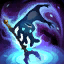

O Trapaceiro das Marés
Fizz
Fizz é um yordle anfíbio que vive entre os recifes que rodeiam Águas de Sentina. É comum que ele busque e devolva os dízimos jogados no mar por capitães supersticiosos, mas mesmo o mais velho dos marinheiros sabe que não é uma boa ideia irritá-lo. São... Veja mais
Habilidades




PASSIVA
LUTADOR LIGEIRO
Fizz pode ser mover atráves de unidades e sofre uma quantidade fixa de dano reduzido de todas as origens.